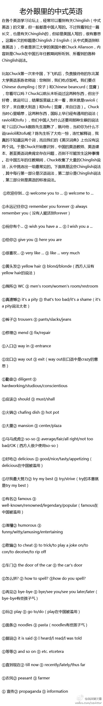

这外教是在哪长大的,管中国面条叫pasta，管中国饺子叫Ravioli?//@慢慢_张: mark //@跃跃跳一下: 先转着@澳洲黄文勇:转一个浙江大学的美国外教Chuck Allanson写过的一篇有关Chinglish（中式英语）的长文，很有意思。如裤子：中国英文书本说trousers？其实人西方人说pants/Slacks，豆腐中国人说Beancurd，西方说Tofo， 你中标没？生活中的列子很多，欢迎大家也举出一些例子来共享，以便共同进步！ 
加州（网页链接）和德州（网页链接）的中小学教学大纲世界史部分的比较很有趣 ：左派大本营加州的大纲有一章讲帝国主义殖民主义及殖民地独立斗争；右派大本营德州的只有一章叫“欧洲的扩张”里面没有任何帝国主义、殖民这样的词汇。另外加州大纲提了1848年革命，德州的没提。
大学是个神奇的地方，对于多数高中毕业生来说，在大学里会经历思想解放和"进步"思想的影响——这在中国和美国都是一样。区别是，在中国的大学，多数情况是用近代西方的自由主义思想解放了从小到大被灌输的官方意识形态思想；而美国的大学则有点相反，学生更容易被左翼思潮颠覆原本的保守意识形态。
记者也是人，他们也处于某一个阶层，于是他们就更容易带有那一阶层的政治倾向。比如美国的记者多数受过高等教育、中产阶级、住在大城市，在美国这些人通常偏左，于是记者很多有偏左的倾向；中国的记者受过高等教育、城市白领、住在大城市，这个阶层的在中国多有点自由右派的倾向，于是记者也是一样。